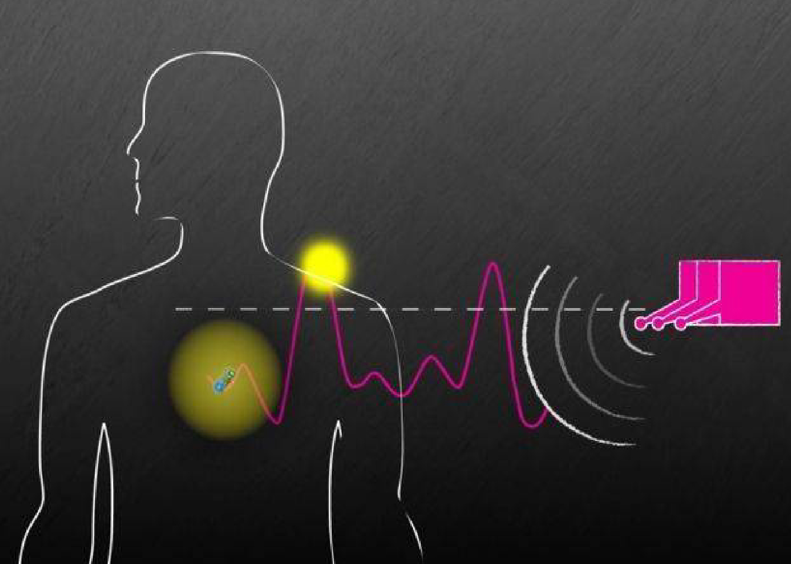

Biyoteknoloji ve Genetik Mühendislik: İnsan Sağlığında Yeni Ufuklar
Biyoteknoloji ve genetik mühendislik, biyolojik sistemleri anlama, değiştirme ve kullanma bilimidir. Bu alanlar, insan sağlığını iyileştirmek için gen tedavileri, biyosensörler, biyomalzemeler ve daha pek çok teknoloji geliştirmektedir.

Genetik mühendislik, genetik materyalin (DNA ve RNA) yapısını değiştirerek özelliklerin ve fonksiyonların kontrol edilmesini sağlar. CRISPR-Cas9 gibi yenilikçi teknikler, genetik hastalıkların tedavisinde ve bitki geliştirme süreçlerinde devrim yaratmıştır.
Gen Tedavileri ve Kişiselleştirilmiş Tıp
Genetik bilgi, bireylerin genetik risklerini değerlendirmek ve tedavi seçeneklerini kişiselleştirmek için kullanılır. Örneğin, kanser gibi kompleks hastalıkların tedavisinde gen tedavileri, hastanın genetik profilini dikkate alarak özel olarak tasarlanabilir.
Biyosensörler ve Sağlık İzleme Sistemleri
Biyosensörler, vücutta biyokimyasal değişiklikleri algılamak için kullanılan cihazlardır. Bu teknolojiler, hastalıkların erken teşhisini sağlayabilir ve tedavi süreçlerini izlemek için değerli veriler sağlar.
Etik Tartışmalar ve Hukuki Düzenlemeler
Biyoteknoloji ve genetik mühendislik, etik ve hukuki sorunlarla da karşı karşıyadır. Özellikle genetik müdahalelerin insan doğasına etkileri, toplum tarafından tartışılmakta ve düzenlemelerle yönetilmeye çalışılmaktadır.
Gelecekteki Potansiyeller ve Yeni Uygulamalar
Biyoteknoloji ve genetik mühendislik alanında yapılan araştırmalar, yeni tedavi yöntemleri ve biyomalzemelerin geliştirilmesine olanak tanır. Bu teknolojiler, tarım, enerji, çevre ve sağlık gibi farklı alanlarda kullanılabilir.
Bu yazıda, biyoteknoloji ve genetik mühendislik alanlarının insan sağlığı üzerindeki etkilerini, temel teknolojilerini ve gelecekteki potansiyellerini ele aldık. Daha fazla bilgi edinmek ve güncel gelişmeleri takip etmek için ilgili literatüre göz atabilir veya uzmanlarla görüşebilirsiniz.